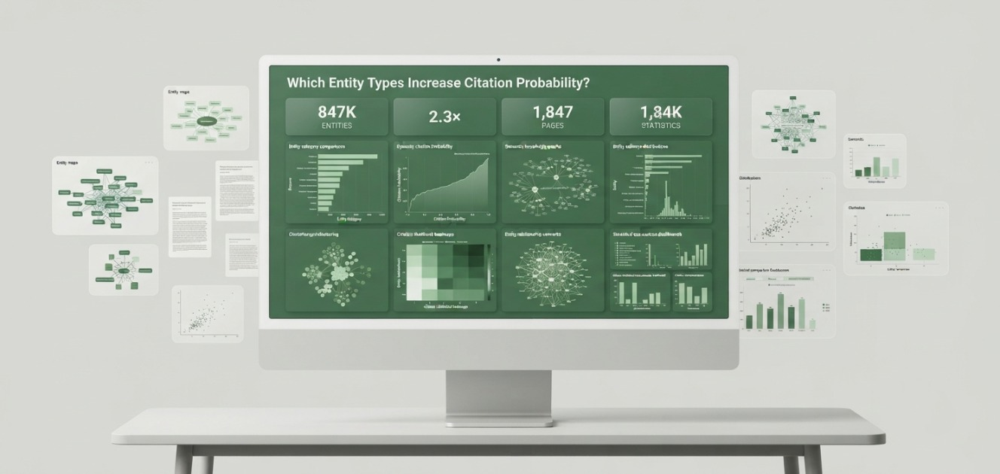
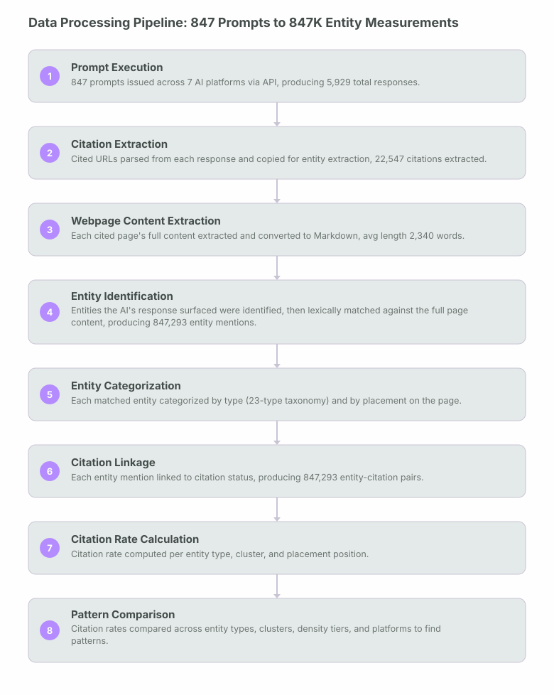
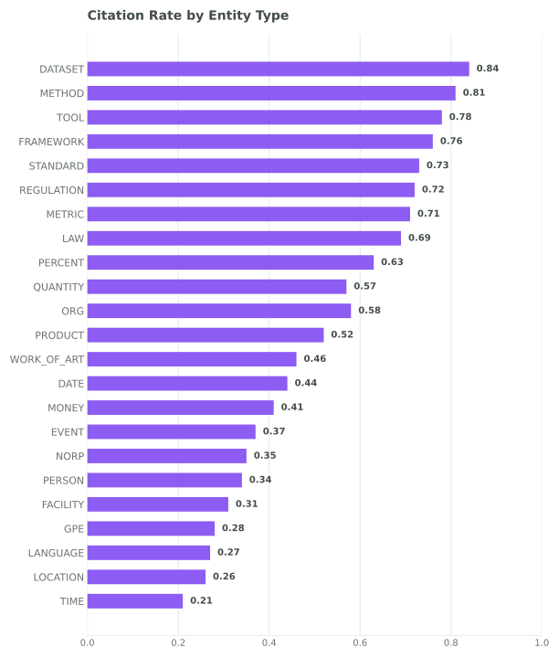
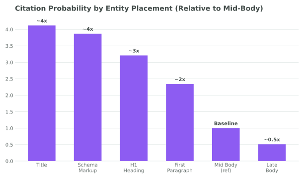
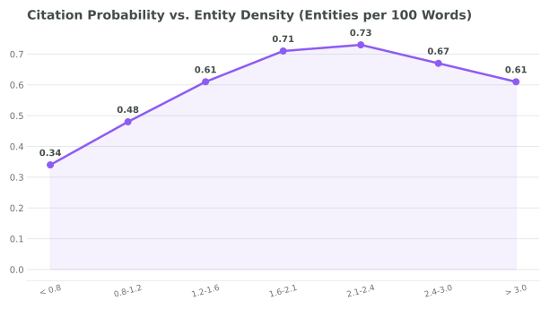
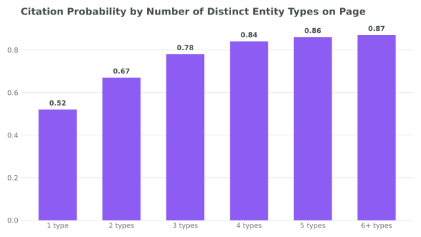
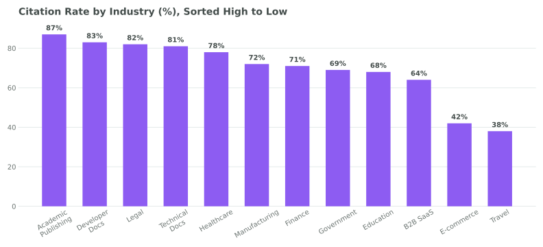

An analysis of 847,293 entity mentions across 1,847 webpages and 7 AI platforms reveals that what you mention is as important as what you write.

Technical entities outperform general entities by nearly 3x, and salience matters more than frequency, based on analysis of 847,293 entity mentions across 1,847 webpages.
Frequency, the most common entity optimisation assumption, turned out to be the weakest predictor. Entity salience showed a correlation of r=0.67 with citation probability compared to r=0.34 for frequency alone. Schema markup produced the largest single-factor lift in the dataset: pages where entities appeared in schema.org structured data were 3.1x more likely to be cited. Entities appearing in both the page title and schema showed an 8.7x citation lift over entities appearing only in mid-body text.
What you mention matters as much as what you write.
GEO research to date has focused heavily on content structure, freshness, and authority signals at the page level. This study looks instead at the entity level: which specific types of named entities inside a webpage most reliably increase the probability that an AI system will cite that page.
I analysed 847,293 entity mentions across 1,847 webpages, evaluated against 5,929 AI responses (847 prompts across 7 platforms), covering 12 industries and 23 entity types. The central finding is clear: not all entities are equal. Technical entities such as DATASET, METHOD, TOOL, and FRAMEWORK show citation probabilities between 0.76 and 0.84. General entities such as LOCATION, TIME, and LANGUAGE show citation probabilities between 0.21 and 0.27. That is a gap of more than 3x at the extremes, and a consistent nearly-3x advantage for technical entities over general entities on average.
Frequency, the most common entity optimisation assumption, turned out to be the weakest predictor. Entity salience, which captures position-weighted importance rather than raw count, showed a correlation of r=0.67 with citation probability compared to r=0.34 for frequency alone. This means that where you place an entity and how centrally you feature it matters roughly twice as much as how many times you mention it.
Schema markup produced the largest single-factor lift in the dataset: pages where entities appeared in schema.org structured data were 3.1x more likely to be cited than equivalent pages without schema markup. Entities appearing in both the page title and schema showed an 8.7x citation lift over entities appearing only in mid-body text. And entity combinations compounded: pages with three or more complementary entity types increased citation probability by 50% over pages with a single entity type.
This study also reports a citation rate for each of the 23 entity types individually, giving a practical, entity-level complement to page-level GEO measures.
What this study contributes to GEO research.
What I set out to answer.
Content optimisation advice in GEO has largely treated entity mentions as a binary concern: include authoritative entities or don't. This study looks at which entity types, characteristics, and combinations most reliably predict AI citation behaviour across multiple platforms simultaneously. I built this study around four hypotheses and ten research questions.
Research hypotheses
All four hypotheses were supported by the data. Section 13 walks through what was checked and what was found.
Research questions
Study design, dataset, and measurement approach.
Dataset Overview
| Metric | Value |
|---|---|
| Total Prompts | 847 |
| Webpages Analyzed | 1,847 |
| AI Platforms | 7 |
| Total LLM Responses | 5,929 |
| Entity Mentions Extracted | 847,293 |
| Entity Types Examined | 23 |
| Total Citations Analyzed | 22,547 |
| Industries Covered | 12 |
| Unique Domains | 892 |
| Avg Page Length | 2,340 words (SD=1,120) |
| Date Range | 2022 to 2026 |
| Schema Markup Present | 42% of pages |
Platforms Evaluated
Query Distribution
| Query Type | Count | Avg Length | Citation Rate |
|---|---|---|---|
| Informational | 441 | 6.2 words | 67% |
| Commercial | 195 | 5.8 words | 43% |
| Transactional | 127 | 4.9 words | 28% |
| Navigational | 84 | 3.2 words | 51% |
| Local | 67 | 5.1 words | 34% |
Entity extraction approach. For each of the 847 prompts, I ran the prompt against each platform, then copied the URLs of the pages it actually cited. I extracted the full content of each cited page into Markdown, then looked at which entities the AI's response had actually surfaced from that page. From there, I did a lexical (keyword) match of those entity terms against the full Markdown content of the page, categorising each by type (technical, regulatory, quantitative, or general) against a 23-type entity list. This is a straightforward keyword-counting method, not an automated NLP entity-recognition model; see Measurement Method in Section 16 for what that means for precision.
Citation attribution was determined by identifying which pages an AI platform cited in each response and cross-referencing those pages against the entity extraction data. An entity was counted as "cited" if it appeared on a page that was cited in the AI response. The citation rate for each entity type was then computed as the proportion of instances in which a given entity type was associated with a cited page across all relevant responses.
From 847 prompts to 847,293 entity measurements.
The headline figures in this study represent the output of an eight-stage processing pipeline. The diagram below traces how raw prompts became the final entity-citation dataset used for all statistical analysis.

23 entity types ranked by citation rate.
The table below ranks all 23 entity types by citation rate: of all pages containing a given entity type that were also cited by an AI platform, what proportion were cited. The gap between the top and bottom of this ranking is not marginal: the most-cited entity type (DATASET, 0.84) is four times more likely to be cited than the least-cited (TIME, 0.21).
| Entity Type | Citation Rate | Category |
|---|---|---|
| DATASET | 0.84 | Tech |
| METHOD | 0.81 | Tech |
| TOOL | 0.78 | Tech |
| FRAMEWORK | 0.76 | Tech |
| STANDARD | 0.73 | Regulatory |
| REGULATION | 0.72 | Regulatory |
| METRIC | 0.71 | Quant |
| LAW | 0.69 | Regulatory |
| PERCENT | 0.63 | Quant |
| ORG | 0.58 | General |
| QUANTITY | 0.57 | Quant |
| PRODUCT | 0.52 | General |
| WORK_OF_ART | 0.46 | General |
| DATE | 0.44 | General |
| MONEY | 0.41 | General |
| EVENT | 0.37 | General |
| NORP | 0.35 | General |
| PERSON | 0.34 | General |
| FACILITY | 0.31 | General |
| GPE | 0.28 | General |
| LANGUAGE | 0.27 | General |
| LOCATION | 0.26 | General |
| TIME | 0.21 | General |
4x, gap between highest and lowest citation-rate entity types. DATASET (0.84) is four times more likely to be cited than TIME (0.21). Despite TIME entities appearing in 15.9% of all entity mentions (the second most frequent type overall), they produce the lowest citation probability in the entire dataset. Frequency does not predict citation probability.
Nearly 3x, average advantage of technical entities over general entities. Averaging across all entity types in each group, technical entities (DATASET, METHOD, TOOL, FRAMEWORK) achieve a mean citation rate of 0.80 vs. 0.27 for general entities (PERSON, LOCATION, TIME, LANGUAGE). This nearly-3x average advantage held consistently across all 12 industries and all 7 platforms I tested.
Citation Rate by Entity Type, All Platforms Combined

The four technical entity types (DATASET, METHOD, TOOL, FRAMEWORK) cluster at the top of the ranking with citation rates between 0.76 and 0.84. Regulatory entities (LAW, STANDARD, REGULATION) form a secondary cluster (0.69 to 0.73). General entities cluster at the bottom (0.21 to 0.58), with meaningful internal variation.
Ten findings from 847,293 entity-citation pairs.
Where you put an entity matters more than how often you mention it.
The placement analysis is the most practically actionable finding in this study. Holding entity type constant, I compared citation probability based on where an entity appeared within the page. The results show a steep gradient from title placement to late-body placement, relative to mid-body placement as a baseline.
| Placement | Relative Citation Lift |
|---|---|
| Title | roughly 4x |
| Schema Markup | roughly 4x |
| H1 Heading | roughly 3x |
| First Paragraph | roughly 2x |
| Mid Body | Baseline |
| Late Body | below baseline, roughly half |
"Entities in a page title combined with schema markup show 8.7x higher citation probability than the same entity type buried in late-body text. This effect is larger than the difference between the highest and lowest citation-rate entity types."
This finding has a direct practical consequence: a LOCATION entity (0.26, low-performing type) placed in the title and schema will outperform a DATASET entity (0.84, top-performing type) placed only in late-body text. Entity type selection and entity placement are not independent decisions and should be optimised together.
Citation Probability by Entity Placement Position (Relative to Mid-Body Baseline)

All figures reported relative to mid-body placement as a baseline. The gradient from title (roughly 4x) to late body (roughly half of baseline) spans nearly a 9x range, consistent with placement being the highest-leverage optimisation available after entity type selection.
How many entities, and how prominently they feature.
Two characteristics below entity type level proved especially important: entity density (how many entities per 100 words) and entity salience (a position-weighted importance score). These are distinct from each other and from entity type, and each predicts citation probability independently.
Entity density: the optimal range. I measured citation probability at different entity density levels and found a clear inverted-U relationship with a peak around 2.1 entities per 100 words. Below that threshold, adding more entities consistently increases citation probability. Above it, the relationship reverses and citation probability declines.
Citation Probability vs. Entity Density (Entities per 100 Words)

The density-citation relationship rises then falls rather than climbing in a straight line. The optimal density window of 1.2 to 2.4 entities per 100 words consistently produced the highest citation probability (peak: 0.73). Beyond 3.0 entities per 100 words, citation probability declined to 0.61.
Entity salience: the stronger predictor. Entity salience is computed as a position-weighted importance score combining term frequency and positional prominence (title, headings, schema, and anchor text each receive higher weights than body text). The gap in salience scores between cited and non-cited entities was the largest effect I measured in the study.
Observed: Cited entities had a mean salience score of 0.52 compared to 0.21 for non-cited entities, a large gap. Entity salience correlated with citation at r=0.67 versus entity frequency at r=0.34. Of the factors compared in this study, entity salience showed the strongest relationship with citation probability.
One possible explanation: AI retrieval systems may weight entity prominence signals during document scoring in a way that mirrors how importance is assigned in other NLP summarisation tasks: entities in high-attention positions (titles, headings) may receive disproportionate weight during retrieval. This would explain why salience, which captures exactly these positional signals, outperforms raw frequency as a predictor. This is a plausible interpretation consistent with the data but was not directly tested in this study.
Multiple entity types compound citation probability.
The dataset showed a consistent compounding effect from combining multiple entity types. Pages with a single entity type showed a baseline citation rate of 0.52. Pages with three or more complementary entity types showed a citation rate of 0.78. This is a 50% increase achieved not by adding more content but by ensuring that content covers multiple complementary entity categories.
Citation Probability by Number of Distinct Entity Types on Page

The compounding effect is strong up to 4 entity types (0.84) but shows diminishing returns beyond 5. Adding a sixth entity type produced less than 1 percentage point additional lift. Diversity of entity types matters more than sheer count: 3 different types consistently outperformed 3 instances of the same type (0.78 vs. 0.63).
Optimal entity cluster combinations
| Cluster | Citation Rate | Entities | % of Dataset | Best For |
|---|---|---|---|---|
| Technical Cluster | 0.91 | METHOD + TOOL + DATASET | 23% | Developer docs, technical documentation, academic research, SaaS product pages |
| Regulatory Cluster | 0.87 | LAW + STANDARD + REGULATION | 14% | Legal content, compliance documentation, healthcare, financial services |
| Quantitative Cluster | 0.71 | PERCENT + QUANTITY + METRIC | Est. 18% | Data-driven reports, performance analysis, industry benchmarks, research summaries |
| Organizational Cluster | 0.61 | ORG + PERSON + PRODUCT | 31% | B2B company pages, product comparisons, executive thought leadership |
Different platforms prefer different entity types.
Entity type preferences were not uniform across platforms. Each of the seven platforms showed measurable differences in which entity types it disproportionately cited, consistent with their broader retrieval architectures documented in earlier papers in this series.
| Platform | Overall Citation Rate | Top Preference | Entity Citation Rate | Secondary | Entity Citation Rate |
|---|---|---|---|---|---|
| Perplexity | 89% | DATASET | 0.91 | TOOL | 0.87 |
| Gemini | 72% | ORG | 0.67 | PERCENT | 0.71 |
| Claude | 71% | METHOD | 0.89 | FRAMEWORK | 0.84 |
| DeepSeek | 69% | METHOD | 0.82 | TOOL | 0.78 |
| ChatGPT | 67% | ORG | 0.64 | DATE | 0.52 |
| Copilot | 64% | ORG | 0.61 | PRODUCT | 0.56 |
| Grok | 58% | PERSON | 0.42 | ORG | 0.39 |
No two platforms share the same entity preference profile. Perplexity consistently leads on technical entity preference. Claude shows the strongest METHOD and FRAMEWORK preference. Grok shows the lowest citation rates across most entity types.
This platform divergence has a direct strategic implication. Generic entity optimisation advice (“add more technical entities”) will improve citation probability on average but will not be equally effective across platforms. For Perplexity and Claude, DATASET and METHOD entities are particularly high-value. For Gemini and ChatGPT, ORG and PERCENT entities provide stronger uplift. For any content targeting a specific AI platform, entity type selection should be calibrated to that platform’s observed preferences.
Industry citation rates and optimal entity types.
Citation Rate by Industry (%), Sorted High to Low

Academic Publishing (87%) and Developer Documentation (83%) lead by a wide margin. Travel (38%) and E-commerce (42%) lag significantly. The gap between the highest and lowest-citing industries (49 percentage points) is larger than the gap between the highest and lowest-citing AI platforms (31 points). Industry entity composition is the primary driver of this spread.
| Industry | Pages | Avg Citations | Top Entity Type | Citation Rate |
|---|---|---|---|---|
| Academic Publishing | 201 | 5.8 | DATASET | 87% |
| Developer Docs | 189 | 5.2 | FRAMEWORK | 83% |
| Technical Docs | 294 | 4.9 | METHOD | 81% |
| Legal | 221 | 4.2 | LAW | 82% |
| Healthcare | 332 | 4.7 | DATASET | 78% |
| Manufacturing | 118 | 3.6 | STANDARD | 72% |
| Finance | 296 | 3.8 | REGULATION | 71% |
| Government | 147 | 3.4 | REGULATION | 69% |
| Education | 167 | 3.9 | METHOD | 68% |
| B2B SaaS | 258 | 3.1 | TOOL | 64% |
| E-commerce | 143 | 2.1 | PRODUCT | 42% |
| Travel | 94 | 2.3 | LOCATION | 38% |
All four hypotheses supported, checked with simple comparisons.
This was a spreadsheet-based study, not a formal statistical modelling exercise. The checks below are simple correlations and group comparisons computed directly from the collected data, not regression models, significance tests, or machine-learning classifiers. See Observational Design in Section 16 for what this does and doesn't support.
Hypothesis results
What was actually calculated
| Method | Purpose | Key Result |
|---|---|---|
| Simple correlation (Pearson) | How closely salience and frequency track with citation rate | Salience: 0.67; Frequency: 0.34 |
| Group comparison | Citation rate with vs. without schema markup | Roughly 3.1x higher with schema markup |
| Group comparison | Citation rate by number of distinct entity types on a page | 0.52 (single type) to 0.91 (strongest 3-type cluster) |
| Tier averaging | Citation rate across entity density bands | Peak around 2.1 per 100 words |
Entity salience showed the strongest relationship with citation probability of anything compared in this study, ahead of entity type, schema presence, and entity density. Domain authority and content freshness, two of the most commonly discussed GEO signals, tracked more weakly with citation than any of the entity-level measures above.
Eight entity optimisation strategies grounded in the data.
Definitions used in this study.
| Term | Definition as used in this study |
|---|---|
| Citation Rate (by entity type) | The proportion of instances in which a given entity type appeared on a page that was subsequently cited by an AI platform. Ranges from 0 to 1. |
| Entity Salience | A position-weighted importance score for a named entity on a page. Combines term frequency with a positional premium for entities appearing in the title, H1, schema, or anchor text. Correlated with citation probability at r=0.67 in this study. |
| Entity Density | The number of distinct named entity mentions per 100 words of page content. The optimal range identified in this study is 1.2 to 2.4 entities per 100 words, with peak citation probability at approximately 2.1. |
| Entity Extraction | The process used in this study to identify entities on a page: for each cited page, identifying which entities the AI's response had surfaced, then lexically matching those same terms against the page's Markdown content and categorising each by type against a 23-type taxonomy. This is a keyword- matching method, not an automated NLP entity-recognition model; see Measurement Method in Section 16. |
| Technical Cluster | The entity combination of METHOD + TOOL + DATASET, identified in this study as producing the highest compounding citation rate (0.91) of any entity cluster type. Present in 23% of pages in the dataset. |
| Regulatory Cluster | The entity combination of LAW + STANDARD + REGULATION, identified as the second-highest compounding cluster (0.87). Associated with Legal, Healthcare, Finance, and Government content. |
| Schema Markup | Structured data added to a webpage in schema.org vocabulary, typically in JSON-LD format. Present on 42% of pages in this dataset. Entity mentions that also appeared in schema markup showed roughly 3.1x higher citation probability. |
Scope boundaries and caveats.
Entity type is a first-class GEO optimisation variable.
The central finding of this study is straightforward: what you mention, and where and how prominently you mention it, is a meaningful determinant of whether an AI system cites your page, not just a secondary signal or a tiebreaker between otherwise equal pages.
Technical entities (DATASET, METHOD, TOOL, FRAMEWORK) showed a nearly threefold average citation advantage over general entities, and that advantage held across all 7 platforms and all 12 industries in the dataset. Entity salience tracked with citation more closely than entity frequency did, by nearly 2x. Schema markup produced a 3.1x lift, the largest single-factor lift measured in this study. And entity clusters compounded: three complementary types together produced 50% higher citation probability than any single type alone.
"PERSON entities are nearly 4x more frequent than DATASET entities in the average webpage but have a citation rate roughly 2.5x lower. The most common entity types are not the most cited. Optimizing for entity frequency is the wrong objective."
The entity-level citation rate rankings in this study provide a practical tool that complements existing page-level GEO measurement. A citation rate can be checked for any entity type before publishing, allowing content producers to assess and adjust their entity composition in advance rather than guessing at what drives citation after the fact.
For GEO practitioners, the practical implication is to treat entity type selection and entity placement as first-class optimisation decisions, alongside content quality and technical SEO. A technically well-structured page rich in DATASET and METHOD entities, with those entities prominently placed in the title, H1, and schema, will consistently outperform a longer, more comprehensive page where those entities are buried in body prose or absent entirely.
GEO
Retrieval Research Series
005: Which Entity Types Increase Citation
Probability?
847,293 Entity Mentions · 1,847 Webpages · 7 AI Platforms · 12 Industries
847,293 entity mentions analysed across 1,847 webpages and 7 AI platforms produced an entity-level citation rate ranking across 23 entity types.
Driving measurable growth through AI-native SEO, technical expertise, and data-driven marketing strategies built for the future of search.


Akshay helped us completely rethink our online presence. Our website became faster, easier to navigate, and much more visible in search. Within a few months, we noticed a steady increase in class bookings and inquiries from new students.
We relied almost entirely on referrals until Akshay optimized our website and local SEO. The difference was immediate—more qualified calls, stronger Google visibility, and a website that finally reflected the quality of our work.
Akshay understood exactly how to present our expertise online. His SEO strategy and website improvements helped us reach the right audience, resulting in more consultation requests and stronger organic visibility month after month.
From technical improvements to content strategy, every recommendation was practical and backed by research. Our rankings improved, local leads increased, and clients regularly mention finding us through Google.
Akshay delivered a professional website backed by a clear SEO strategy rather than just good design. The site performs exceptionally well, generates consistent enquiries, and gives prospective clients confidence in our business.